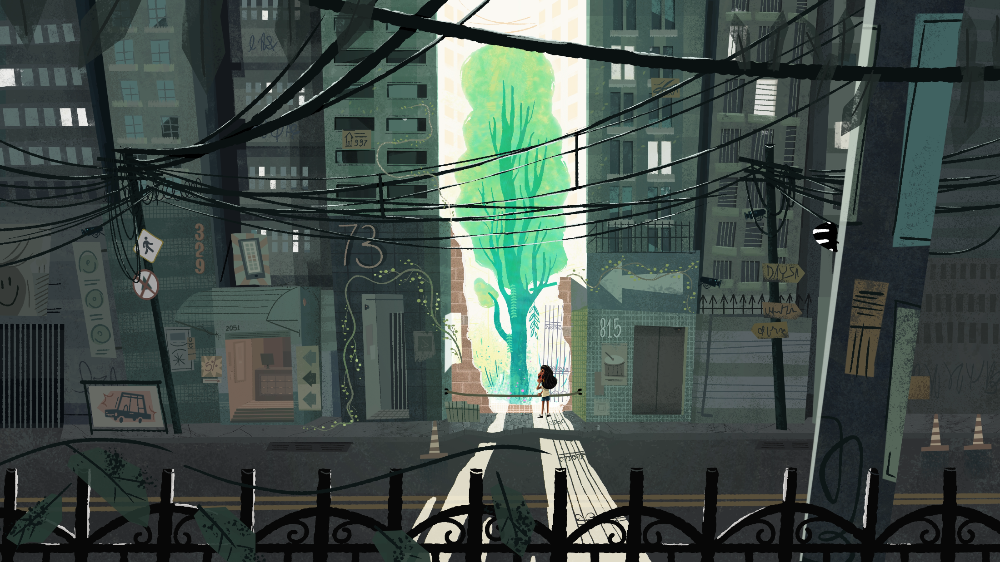
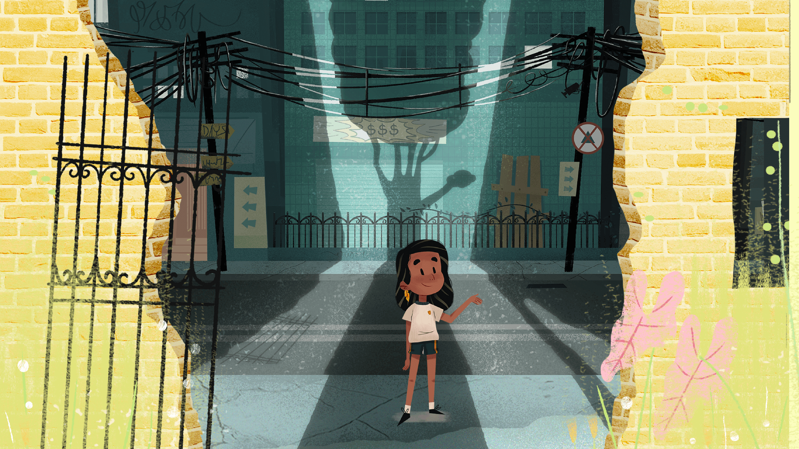
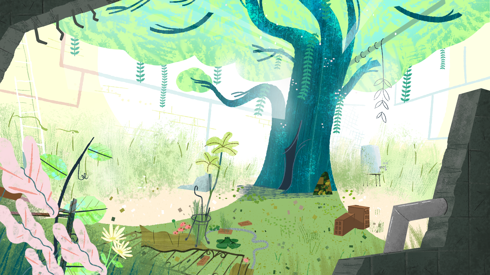
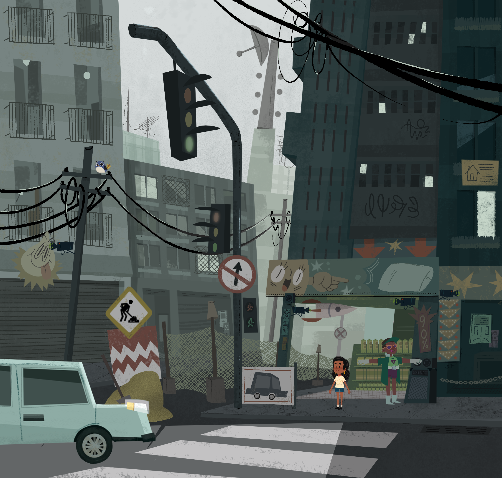
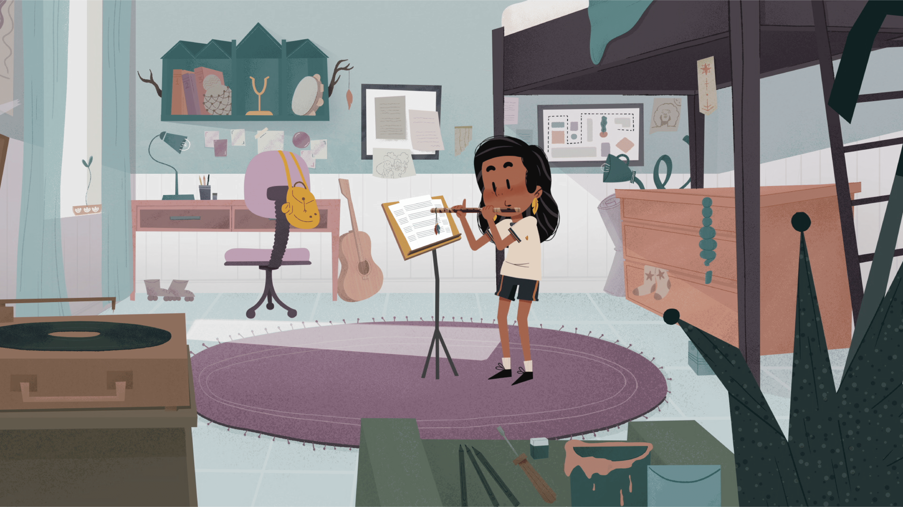
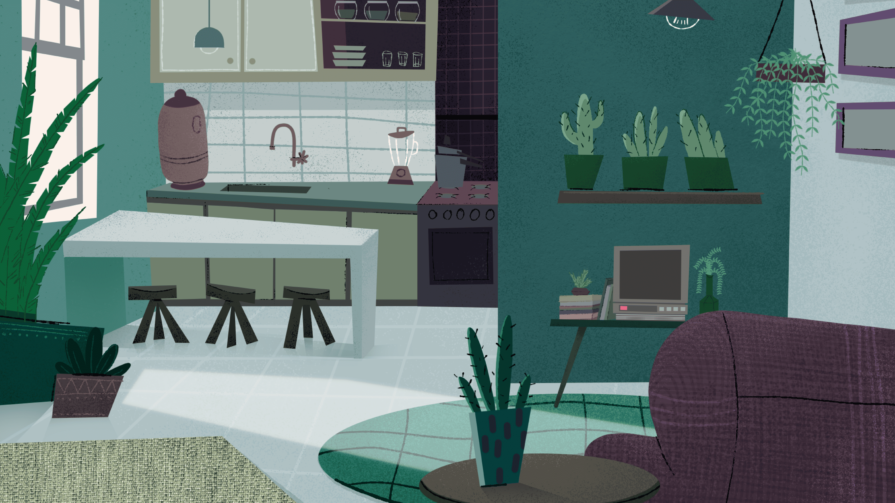
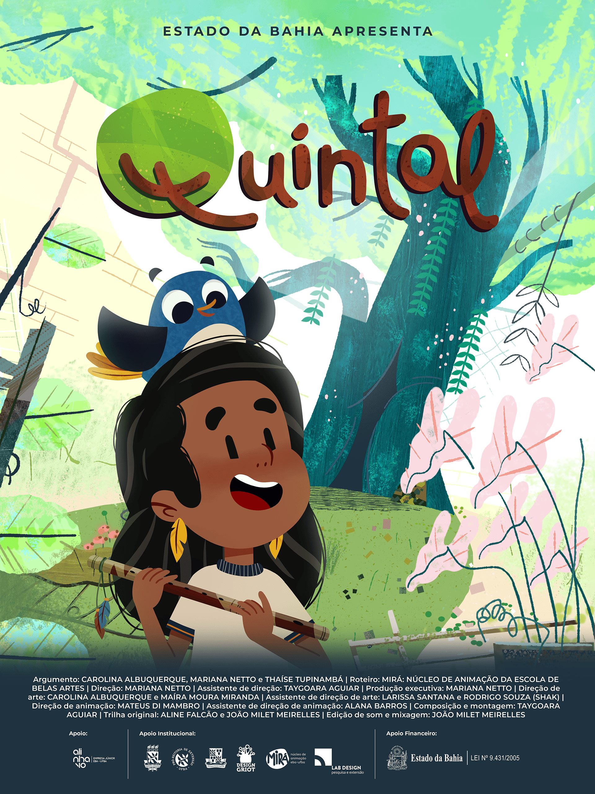
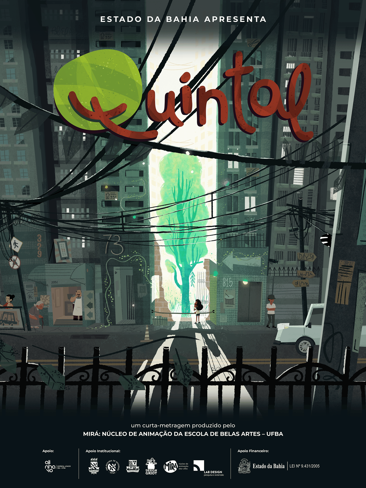
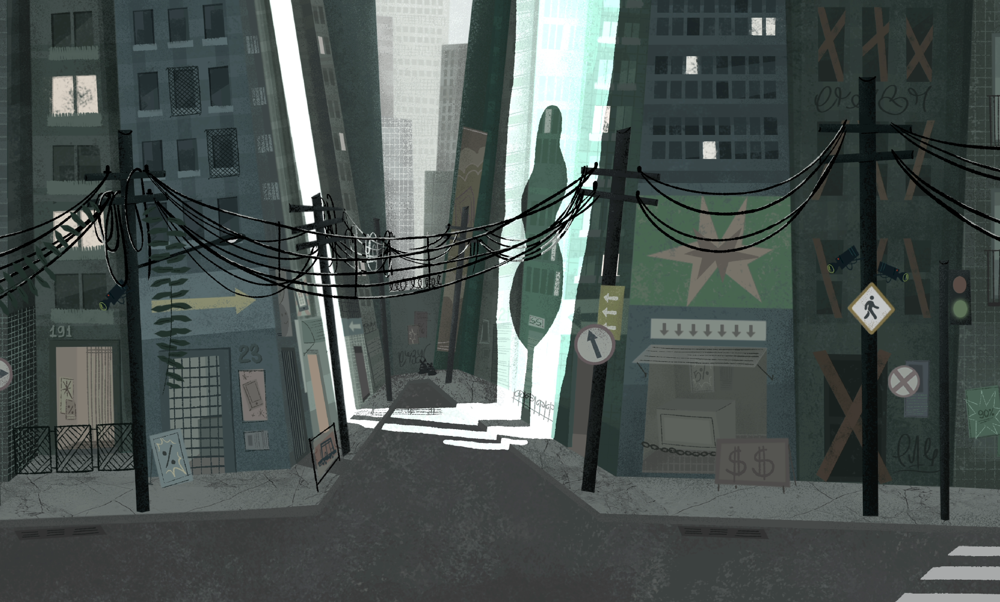

Larissa Monteiro

Quintal
Project
Quintal
Year
2020-2022
Scope of Work
Ilustração
O Quintal (curta-metragem) é inspirado na obra de Manoel de Barros, mais especificamente na poesia “Tributo a João Guimarães Rosa”. A história retrata o início da amizade de Diadorim, uma menina sonhadora, e Riobaldo, um alegre passarinho azul. Em um terreno abandonado, aparentemente esquecido pela cidade grande, Diadorim e Riobaldo buscam juntos se libertar das limitações impostas pela velocidade das demandas cotidianas. A animação foi idealizada como projeto de experimentação discente proposto por Carolina Albuquerque, Mariana Netto e Thaíse Tupinambá, sob orientação da professora Tamires Lima (EBA/UFBA), sendo contemplada com o edital PIBIEXA/PROEXT/UFBA em 2017. A proposta foi reestruturada durante o trabalho de conclusão do curso de Design de Mariana Netto em 2018, com orientação de Tamires Lima e Taygoara Aguiar. Posteriormente, o projeto, desenvolvido com orientação de Tamires Lima e mentoria de Cinthia Maria (Estandarte Produções), foi contemplado pelo Edital Setorial de Audiovisual 2019 – FCBA. O Quintal foi produzido por integrantes do Mirá (Núcleo de Animação da Escola de Belas Artes da UFBA), com apoio da Alinhavo: Empresa Júnior da EBA, além da consultoria e participação ativa de profissionais independentes de arte conceitual, música e animação. Nesse contexto coletivo, o projeto contou com uma equipe de ilustradores e animadores, na qual atuei como assistente de direção de arte, com contribuições em arte conceitual, desenvolvimento de layouts e colorização de cenários.
EN
O Quintal (short film) is inspired by the work of Manoel de Barros, more specifically the poem “Tribute to João Guimarães Rosa.” The story portrays the beginning of the friendship between Diadorim, a dreamy girl, and Riobaldo, a cheerful blue bird. In an abandoned lot, seemingly forgotten by the big city, Diadorim and Riobaldo seek together to free themselves from the limitations imposed by the fast pace of everyday demands.
The animation was conceived as a student experimental project proposed by Carolina Albuquerque, Mariana Netto, and Thaíse Tupinambá, under the guidance of Professor Tamires Lima (EBA/UFBA), and was awarded funding through the PIBIEXA/PROEXT/UFBA program in 2017. The proposal was later restructured during Mariana Netto’s final graduation project in Design (2018), with guidance from Tamires Lima and Taygoara Aguiar. Subsequently, the project—developed under the supervision of Tamires Lima and mentorship of Cinthia Maria (Estandarte Produções)—received support from the 2019 Sectorial Audiovisual Grant – FCBA.
O Quintal was produced by members of Mirá (Animation Center of the School of Fine Arts at UFBA), with the support of Alinhavo: EBA’s Junior Enterprise, as well as consultancy and active participation from independent professionals in conceptual art, music, and animation. Within this collective context, the project brought together a team of illustrators and animators, in which I served as assistant art director, contributing to conceptual art, layout development, and background coloring.
PT
O Quintal (curta-metragem) é inspirado na obra de Manoel de Barros, mais especificamente na poesia “Tributo a João Guimarães Rosa”. A história retrata o início da amizade de Diadorim, uma menina sonhadora, e Riobaldo, um alegre passarinho azul. Em um terreno abandonado, aparentemente esquecido pela cidade grande, Diadorim e Riobaldo buscam juntos se libertar das limitações impostas pela velocidade das demandas cotidianas.
A animação foi idealizada como projeto de experimentação discente proposto por Carolina Albuquerque, Mariana Netto e Thaíse Tupinambá, sob orientação da professora Tamires Lima (EBA/UFBA), sendo contemplada com o edital PIBIEXA/PROEXT/UFBA em 2017. A proposta foi reestruturada durante o trabalho de conclusão do curso de Design de Mariana Netto em 2018, com orientação de Tamires Lima e Taygoara Aguiar. Posteriormente, o projeto, desenvolvido com orientação de Tamires Lima e mentoria de Cinthia Maria (Estandarte Produções), foi contemplado pelo Edital Setorial de Audiovisual 2019 – FCBA.
O Quintal foi produzido por integrantes do Mirá (Núcleo de Animação da Escola de Belas Artes da UFBA), com apoio da Alinhavo: Empresa Júnior da EBA, além da consultoria e participação ativa de profissionais independentes de arte conceitual, música e animação. Nesse contexto coletivo, o projeto contou com uma equipe de ilustradores e animadores, na qual atuei como assistente de direção de arte, com contribuições em arte conceitual, desenvolvimento de layouts e colorização de cenários.
.png)


No items found.





No items found.
